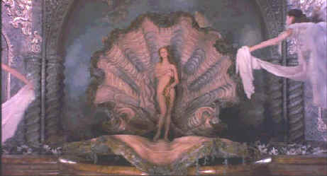

| Adventures
of Baron Munchausen/A,A- |
|
Columbia/1988/127m/ANA 1.77 |
The Baron's back and better than
before in this smart looking DVD. The Adventures of Baron Munchausen is a richly detailed
interpretation of the outlandishly imagined and fabricated exploits of the legendary
eighteenth-century German adventurer and storyteller. Director Terry Gilliam's imagination and
ingenuity are uniquely suited to tall tales, and despite many chronicled production difficulties,
the film stands as an incredible achievement. Like tall tales themselves, this film is one that
grows in stature with repeated viewings.
 |
|
Uma on the half shell ©Columbia |
The film can divided into six major
sections: The Siege and the Play; The Grand Turk; King of the Moon; Vulcan's Domain; Inside the
Whale; and the Final Battle. Each stands on its own, serving up treasures to be enjoyed at
different moments. One could easily criticize the film for its episodic nature wealth of incidental
detail, which perhaps can make it difficult to fully appreciate each segment; hence, the growing
appreciation on ensuing visits to the film.
The opening play within the film and the siege of the city are a tale unto
themselves, followed by the next delightful adventure, the tour of the Grand Turk's harem. The
wonders of the harem are marvelously filmed, including a Gilliam original instrument of spiked
delight that is sure to re-light the fuse of laughter long after the disc has completed its
revolutions.
After a return to the besieged present during which a fantastic hot air
balloon is fabricated to send the Baron and young companion Sally Salt on a journey to secure help
to relieve the siege, the audience is treated to an hilarious visit to the moon. Here The King of
the Moon and his Queen battle jealously over their little visitors. The ingenuity of Gilliam brings
incredible excitement to the lunar sequences making this visit one of the highlights of a mythic
adventure.
Robin Williams is at his manic best as the King of the Moon It is easy to
take for granted the very fine performance of John Neville as Baron Munchausen so well hidden
behind make-up and talent is the actor masked. The subtle differences in movement and mannerisms as
the Baron changes ages is very well accomplished. Alongside Neville is an appealing Sarah Polley (Go,
The Sweet Hereafter) as young heroine Sally Salt. Young Miss Polley helps broaden the appeal
of the film to include youngsters not yet capable of enjoying much of the wonderful spectacle
presented by Gilliam and cohorts. Eric Idle is hilarious support for the Baron in the role
of fleet-footed Berthold. The recently deceased Oliver Reed brings his blustering baritone voice
and powerful physical posturing to the role of Vulcan. And get a gander of Uma Thurman emerging
from that shell. Oh, well.
Gilliam's wonderful team of filmmakers brings this grand fantasy vision to
the screen with great energy and excitement. Giuseppe Rotunno's photography weaves its magic
through diverse lighting situations and varied color schemes. The production design of Dante
Ferretti is simply amazing bringing mining Gilliam's imagination to expansive depths. And the score
of Michael Kamen imbues all the pomp and circumstance of the world surrounding the Baron to
energetic life.
It's a pleasure to see The Adventures of Baron Munchausen dressed
in DVD clothing. Every precious detail of the set design is preserved in this lovely anamorphic
transfer. The color is extremely stable. Even the smoke from the Baron's pipe stands out against
the tight grain of the misty sky on the balloon flight. The image is very sharp and in some scenes
slight over-enhancement produced edge ringing. The most difficult scenes that were decoder
nightmares on laser look terrific on this anamorphic transfer. The Rococo designs of the Sultan's
harem are now perfectly stable through camera pans. Every marvelous detail of the production craft
is presented in the purest images. The Dolby Digital 2 channel surround sound adds lots is matrixed
with lots of ambient sounds of battle and the Kamen music, filled with regal horns, sounds
appropriately throaty.
|
|


Apocalypse Now is Coppola's distorted vision of war now on DVD in
gorgeous anamorphic images.

Tucker: The Man and His Dream is beautifully filmed with loving attention to detail.

Selections from the feature archive include articles on Akira Kurosawa,
Frank Darabont, Blonde Bimbos, Hollywood
Street Gangs, or Vietnam:
The Hollywood Pariah, and many more....
Sturges Emerges
Preston Sturges was Hollywood's resident comic genius for more than a decade. His movies are
timeless. Click on his image to read all about it.
 Why
do Al Pacino, Gene Hackman, Pat O'Brien and Goldie Hawn fall into a select group of actors? Find
out more by clicking the Hollywood
on the Sidelines symbol. Why
do Al Pacino, Gene Hackman, Pat O'Brien and Goldie Hawn fall into a select group of actors? Find
out more by clicking the Hollywood
on the Sidelines symbol.

Movie Rage: Death in the Aisles
Everyone knows what it feels like to get angry at the
movies these days. Here's a humorous but not so delightful view of big screen misery.
 
DVDPlanet is the DVD
incarnation of legendary laser retailer Ken Crane's. Deep discounts and serious service.

Elegant DVD portal with news, reviews, links and information
galore.

Many movie related links in an easy interface. You can even rate
the sites.

Great site for DVD followers. Lots of
information, some speculation, opinion, and reviews all bundled in a sparkling interface.
|